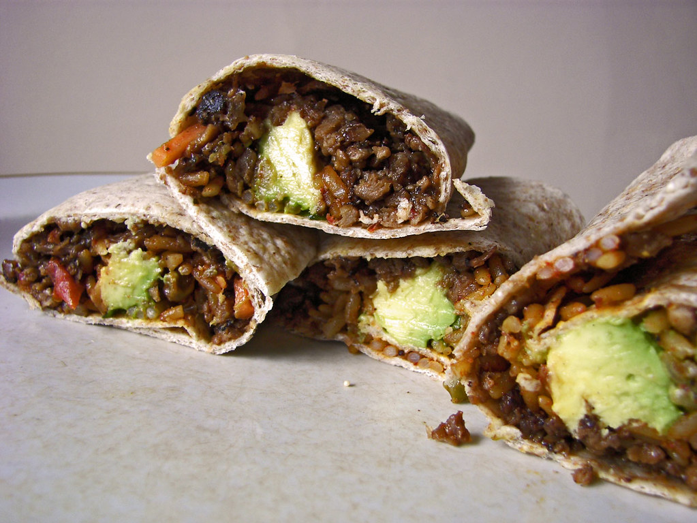

Black Bean Burrito
Homepage

These simple burritos are a great addition to any day.
Ingredients
Note: The Ingredients below are for 1 burrito. Multiply as needed for quantity desired.
- Tortilla: large
- Black beans: 1/3 cup canned
- Rice: 1/4 cup cooked
- Avocado: 1/4 to 1/2 of ripe avocado (sliced or smashed)
- Salsa: 1-2 tablespoons (tomato-based)
- Seasoning (pinch of each):
- Salt
- Cumin
- Chili powder
- Black pepper
- 2 damp paper towels
Steps
- Mix the beans, rice, salsa, and seasoning in a small bowl. Microwave for 34-60seconds until hot.
- Soften the Tortilla in the microwave for 10 seconds between two damp paper towels.
Homepage